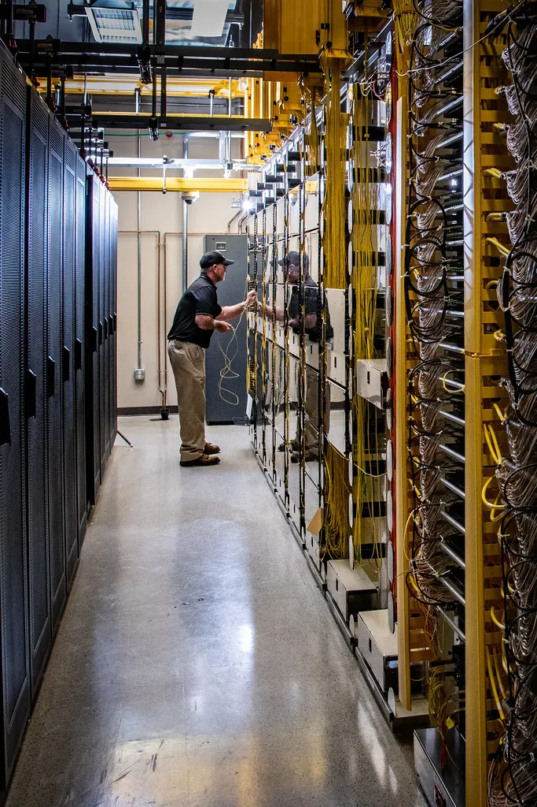

La fibra es nuestra, de punta a punta
No revendemos la red de nadie. Tendemos, empalmamos y mantenemos los 480 km del anillo, así que cuando algo falla sabemos exactamente dónde mirar.
Subida igual que la bajada, siempre
Operador de proximidad · Gironès, Osona i el Ripollès
Fibra simétrica tendida por nosotros y móvil 5G sin permanencia. Instalamos en 72 horas y el precio que firmas hoy es el que pagarás dentro de cuatro años.
Por qué existimos
Empezamos en 2016 tendiendo fibra en tres calles de Ripoll con una zanjadora alquilada. Hoy somos cuarenta personas y seguimos con la misma norma: si prometemos una fecha, se cumple.
No revendemos la red de nadie. Tendemos, empalmamos y mantenemos los 480 km del anillo, así que cuando algo falla sabemos exactamente dónde mirar.
Subida igual que la bajada, siempre
Atención y técnicos en Girona y Vic. Sin menú de opciones, sin centro de llamadas a seis husos horarios de aquí y sin robots que te pidan repetir el DNI.
1,4 minutos de espera media
Ni subidas por IPC ni descuentos de bienvenida que caducan a los doce meses. Nuestras tarifas han subido una vez en nueve años, y avisamos con tres meses.
Sin permanencia en ninguna tarifa
Tarifas para casa
Todas incluyen instalación, alta y router. Puedes cambiar de una a otra cuando quieras y el cambio se aplica en la factura del mes siguiente.
Para una casa de dos, con teletrabajo puntual.
28€ / mes · IVA incluido
Precio fijo mientras mantengas la tarifa
La que contratan 6 de cada 10 hogares.
38€ / mes · IVA incluido
Antes 45 € · precio revisado en enero
Casas grandes, familias numerosas, gente que sube vídeo.
59€ / mes · IVA incluido
Precio fijo mientras mantengas la tarifa
Suficiente para dos personas y una tele.
22€ / mes · IVA incluido
Precio fijo mientras mantengas la tarifa
El punto dulce entre precio y margen.
29€ / mes · IVA incluido
Antes 34 € · precio revisado en enero
Para quien mueve archivos, no páginas.
45€ / mes · IVA incluido
Precio fijo mientras mantengas la tarifa
Precios con IVA incluido para instalaciones dentro de nuestra cobertura directa. La velocidad indicada es la del acceso; en Wi-Fi depende del dispositivo y de la casa. Ninguna tarifa lleva permanencia: puedes irte con treinta días de aviso y los equipos se quedan contigo.
Justa
25 GB · 5G · llamadas ilimitadas
8 €/mes
Holgada
60 GB · 5G · llamadas ilimitadas
12 €/mes
Sin contar
Datos ilimitados · 5G · llamadas ilimitadas
18 €/mes
Cómo está hecha
Si eres cliente y quieres ver dónde acaba tu fibra, te enseñamos el nodo. No es una metáfora: hacemos visitas guiadas dos veces al año.
Doble camino entre Girona, Vic y Ripoll. Si una zanja se corta, el tráfico da la vuelta por el otro lado en menos de cincuenta milisegundos.
Girona y Vic, con energía redundante y refrigeración libre nueve meses al año. Cada servicio corre en los dos a la vez.
Peering en Barcelona y Marsella con tránsito de dos operadores distintos. Ningún proveedor puede dejarnos a oscuras él solo.

Instalación
Metes tu municipio arriba, ves qué velocidad llega a tu calle y escoges tarifa. Si prefieres hablarlo, llamas y lo hacemos por teléfono en diez minutos.
No «entre las nueve y las seis». Una franja de dos horas, y si el técnico va a llegar tarde te llama él mismo antes de la hora.
Tiramos la fibra, montamos el router, medimos la velocidad en cada habitación y te dejamos el papel con los números. La portabilidad la coordinamos nosotros.
Dónde llegamos
Priorizamos por solicitudes acumuladas, no por número de habitantes. Por eso Setcases entró antes que barrios enteros de la capital.
Fibra de 10 Gb disponible Fibra de 1 Gb disponible Obra abierta este año
¿Tu calle no sale? Escríbenos igualmente. Cada solicitud entra en el mapa de prioridades del año siguiente y te avisamos el día que abrimos el nodo, aunque tarde dos años.
Para empresas
Fibra dedicada con ancho garantizado, centralita en la nube, backup 5G automático y una persona con nombre que conoce tu instalación. Sin ticket número 48.291.
Clientes
Vivimos a cuatro kilómetros del pueblo y llevábamos ocho años con un radioenlace que se caía cada tormenta. Tornarem tendió la fibra hasta la masía en once días.
Llamé un domingo a las nueve de la noche por una avería. Me cogió una persona, no un menú de opciones. El lunes a primera hora tenía técnico en casa.
Somos doce en la oficina y subimos vídeo todo el día. Pasamos de esperar la subida a no pensar en ella. Y la factura no ha cambiado en tres años.
Dudas razonables
Hablemos